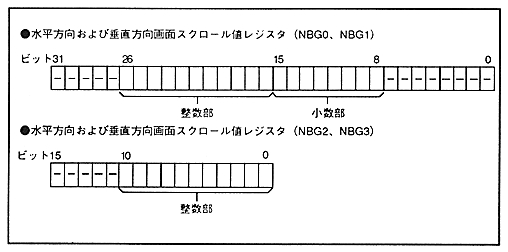

The normal scroll screen can perform vertical, horizontal, and horizontal dot scrolling on all four screens. The screen scroll value specifies the coordinates of the dot displayed in the upper left corner of the TV screen in the screen scroll value register. The The screen scroll value is valid up to a value that does not exceed the display area set for each screen. If a value that exceeds the specified value is specified, the screen in the display area is repeated. In addition, the fractional part of the screen scroll value for NBG0 and NBG1 is used only for coordinate calculation, and is truncated in the final display coordinate value. The horizontal (X) direction coordinate is specified by the horizontal direction screen scroll value integer part bit and the horizontal direction screen scroll value fraction part bit, and the vertical direction screen scroll value integer part bit and the vertical direction screen scroll value fraction part bit are vertical (Y ) Specify the direction coordinates.
The decimal part bit is added immediately below the integer part bit. Figure 5.1 shows the bit configuration.
Figure 5.1 Screen scroll value bit configuration
